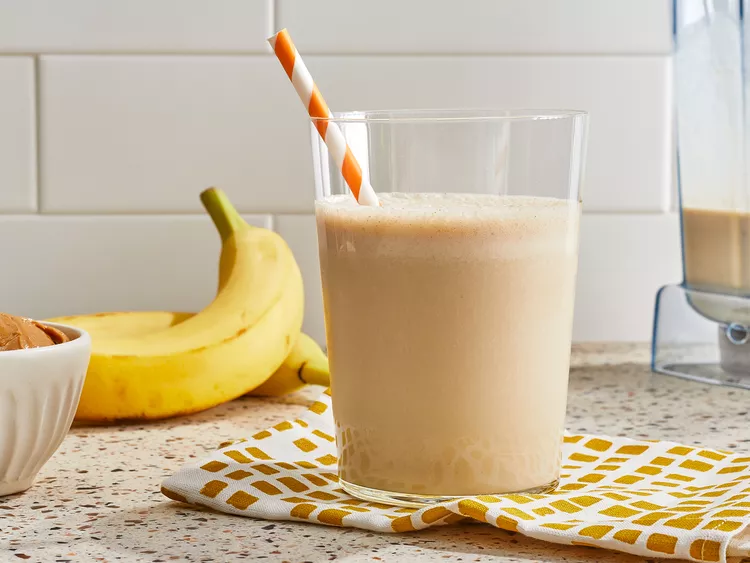

Want a smoothie that's not just refreshing, but sweet and tasty? Try our Peanut Butter Banana Smoothie!
Whether it's breakfast, lunch, or a late-night snack, this smoothie will satisy your cravings and keep you energized.